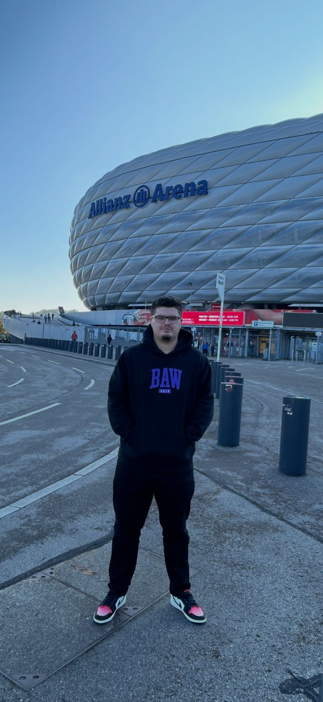

Sobre mim
Desenvolvimento com foco em arquitetura, produto e escalabilidade.
Meu nome é Bruno Getten Triches. Trabalho com desenvolvimento há 8 anos, com experiência em liderança técnica, mentoria, arquitetura de software, refatoração e evolução de produtos.
Tenho atuação prática em backend, frontend, mobile, integrações, jogos e modernização de sistemas legados, sempre com foco em clareza de código, manutenibilidade e resultado real.
Principais habilidades

Experiência
Minha trajetória profissional
Resumo das experiências que melhor representam meu perfil técnico e de liderança.
Serviços
Como posso agregar
Serviços organizados em torno de produto, arquitetura, performance e evolução de sistemas.
Projetos
Projetos em destaque
Seleção de projetos e estudos visuais que representam meu repertório em interfaces, produtos digitais, implementação e organização de sistemas.
Contato
Informações de contato
Caso tenha interesse em parceria, serviço, liderança técnica, consultoria, mentoria ou projeto, você pode falar comigo por qualquer um dos canais abaixo.